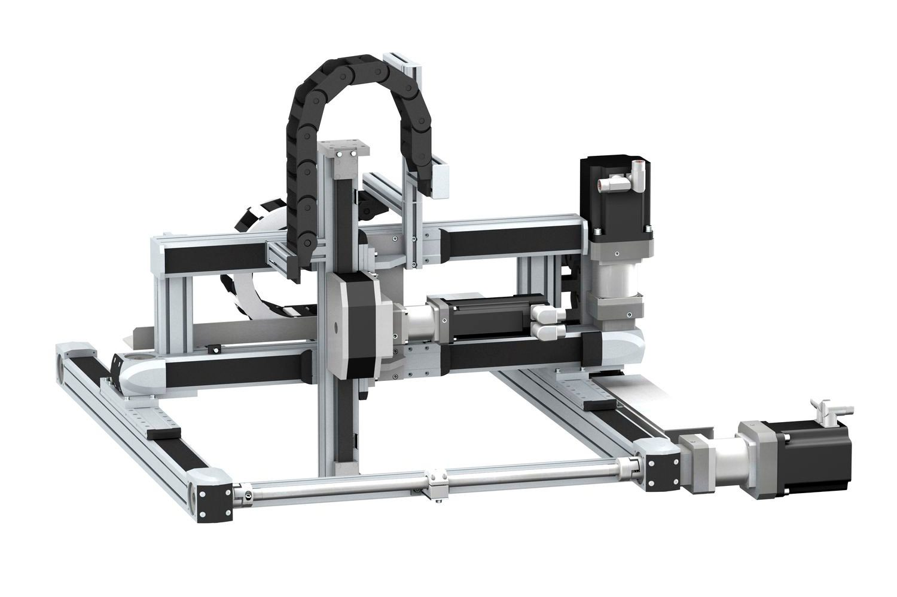
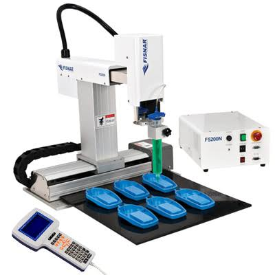
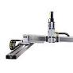
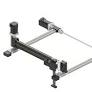
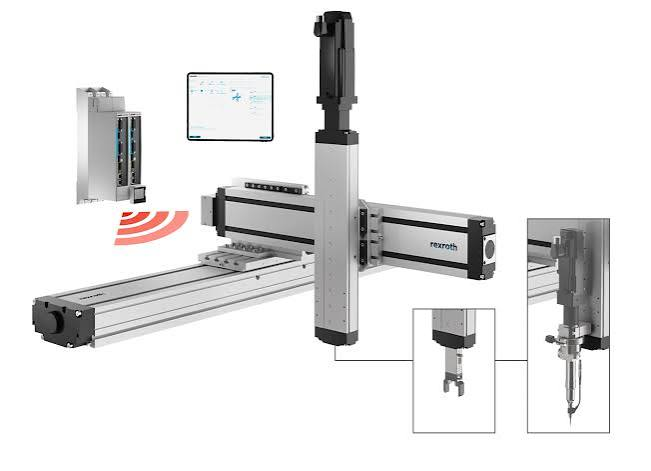

O robô cartesiano realiza movimentos lineares nos eixos X, Y e Z, oferecendo alta precisão, repetibilidade e excelente desempenho em processos industriais como montagem, pick and place, usinagem e automação.


O robô cartesiano, também conhecido como robô de coordenadas cartesianas ou gantry robot, é um tipo de robô industrial que se move em três eixos lineares perpendiculares entre si (X, Y e Z), formando um sistema de coordenadas cartesianas. É um dos tipos mais simples e versáteis de robôs industriais.
Empresas de referência no setor de automação industrial desenvolvem robôs cartesianos para aplicações que exigem alta precisão, repetibilidade e movimentação linear, atendendo processos como montagem, inspeção, paletização e sistemas Pick and Place.

Referência em tecnologias de movimento e controle, a Parker Hannifin oferece robôs cartesianos e sistemas lineares de alto desempenho, ideais para aplicações que exigem precisão, velocidade e confiabilidade em ambientes industriais.

Reconhecida por suas soluções de automação de excelente custo-benefício, a igus desenvolve robôs cartesianos modulares com componentes livres de lubrificação, proporcionando baixo custo de manutenção e fácil integração em diferentes processos produtivos.

Especialista em automação industrial e tecnologia de movimento, a Bosch Rexroth fabrica robôs cartesianos capazes de realizar tarefas de movimentação linear, montagem e manipulação de materiais com elevada precisão, eficiência e flexibilidade.